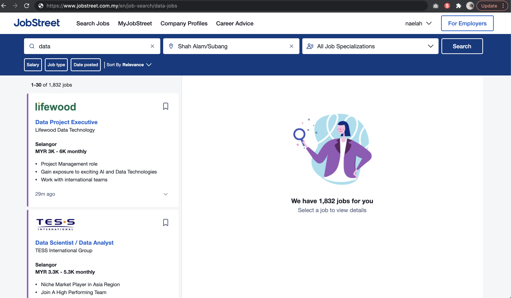
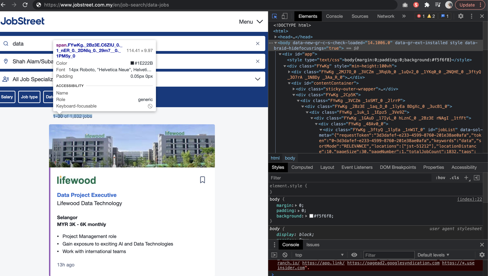

Each website is built by different individuals so there is no one magic script that can scrape different websites because the art of scraping lies in deconstructing the html elements into separate objects that we can extract or “scrape” the information from. Of course there are scraping tools out there that automate these scripts based on your preference (literally google free web scraping tools, there are a bunch of them). I have tried several of these tools and I always end up getting frustrated and going back to writing the codes myself because a) they always have a pricing tier despite claiming to be free, and b) the process is overcomplicated and some websites are just not built intuitively that these tools can easily automate. This tutorial specifies the necessary steps to scrape data from Jobstreet Malaysia but the process of crawling and scraping boils down to a few basic steps that can be applied to almost any website.
Web Scraping vs. Web Crawling
These two terms get thrown out a lot when it comes to automating data acquisition from the internet. Sometimes it is used interchangably to mean the same thing but they are actually different methods that are used together in achieving the same goal which is to extract information from a website that is presented in a way that has a pattern. This pattern is the key in writing codes that can iterate from one page to another. For example let’s look at jobstreet’s search page.

There are several patterns here that we can leverage on. At this point you have to ask yourself, how do I get all these links? If you weren’t aiming to crawl and to scrape, how would you manually do it? In this example, jobstreet provides a paginated result page. There are a fixed amount of number of links in each page and they are all in similar looking boxes which suggests that the styling would use the same ID, this is important for scraping later, but as for now, in order to crawl and get all the relevant links, you need to determine how the data is populated.
Another example is Facebook which does not have pagination, on the contrary it uses infinite scrolling so the method of crawling is completely different. Even if a website has pagination, we need to determine how the website processes user input and goes to the next page. Most commonly, websites implement URL parameters which means the number of page is in the url like www.website.com?page=2 or www.website.com/2/. In these cases, going from one page to another is pretty straightforward. However, some websites implementing things like servlets and do not take parameters in the URL are trickier to crawl but still possible. You can maybe imitate certain buttons clicking or imitate scrolling, anything is possible.
-
Search keyword is appended in the url
Because jobstreet uses URL parameters, it’s just a matter of modifying the URL in each iteration. Here we can also see that the keyword is appended at the end of the URL as such,
www.jobstreet.com.my/en/job-search/data-jobs, this allows for querying multiple keywords. -
There are 1832 job postings, with 30 jobs listed on each page
This means we only need math to determine how many iterations we need to go through all pages. We determine the class name of the text
1832 jobsby inspecting the element and from there we can simply do the following
import math
def get_page_number(result):
# assuming total_jobs is processed and converted to integer
# total_jobs divide by 30 pages and take the ceiling
page_number = math.ceil(result/30)
return page_numberSo now we have the page number, 8 which allows us to crawl all 8 page results and scrape the relevant links.
Is it Legal?
The short answer is an astounding Yes! We are not hacking into anyone’s private account. We are simply automating the process of one person manually clicking through a website 200 times and copying and pasting information, into a program that we can leave for hours and maybe days that would ultimately save our time but has no damaging consequences to the website owners. Ethically though, what we do with the information is another issue and the fact that scraping as a tool for morally ambiguous activity is up for debate, like how Mark Zuckerberg scraped images of women in sorority houses in Harvard to create a website comparing which woman is hotter is unanimously frowned upon but it is 100% legal.
Getting Started
To run the script, simply
- Clone this Github repository
- Create a virtual python environment (optional). Run the following script in terminal
python -m venv venv source venv/bin/activate - Once the environment is activated, install the requirements
pip install -r requirements.txt - Download chromedriver based on your chrome version and determine your version and header here
- Modify
jobstreet_scraper.pyaccordingly
# Modify headers to match your device
headers = {'User-Agent':'Mozilla/5.0 (Macintosh; Intel Mac OS X 10_9_5) AppleWebKit/537.36 (KHTML, like Gecko) Chrome/44.0.2403.157 Safari/537.36'}
# Insert path to your chromedriver here
path = "/usr/local/Caskroom/chromedriver/88.0.4324.96/chromedriver"
...
def main():
# determine the keywords that you want to query, it can be one or more but must be in a list
key_words = ['agriculture','crop']
Run python jobstreet_scraper.py in terminal and you should see the scraping process starting.
Breakdown of functions
The script consists a few key steps in successfully crawling and scraping which are
1. Configure driver to browse web pages & BeautifulSoup4 to scrape html codes
This part is very important because it is what automates the process. The driver’s purpose is to visit the pages that we tell it to. So in this code snippet, we have determined a URL template which essentially accepts the parameters and generate a fully functional URL because we have identified its pattern. From here, we tell the driver to go to that URL and then we use BeautifulSoup to identify the html elements that exist on the page. This is how scraping is possible because every website’s user interface is in html & CSS, which means there are html tags like <div> or <span> amongst many other tags that wraps around information which allows for a beautiful and readable user interface. These elements normally have unique IDs for specific stylings. Reuse of the same style is possible with the same ID so what we need to do is basically identify that class name or ID and we can deconstruct the codes to it’s barest element which is text.
from bs4 import BeautifulSoup
from selenium.webdriver import Chrome
# configuration
headers = {'User-Agent':'Mozilla/5.0 (Macintosh; Intel Mac OS X 10_9_5) AppleWebKit/537.36 (KHTML, like Gecko) Chrome/44.0.2403.157 Safari/537.36'}
path = "/usr/local/Caskroom/chromedriver/88.0.4324.96/chromedriver"
driver = Chrome(executable_path=path)
# url template accepting keyword and page number
base_url = "https://www.jobstreet.com.my/en/job-search/{}-jobs/{}/"
# url generation https://www.jobstreet.com.my/en/job-search/agriculture-jobs/1/
url = base_url.format(keyword, 1)
# visits the specified url
driver.get(url)
# parses html page into selectable elements
soup = BeautifulSoup(driver.page_source, 'html.parser')Now that we know how to go from page to page, we’ll start back at the beginning where we have certain keywords to query. 2. Iterate through keywords
If you have only one keyword to query, then you might not need the following code snippet but in most cases, you want to scrape several keywords, so essentially what you need to do is iterate through the keywords one by one and once you have the resulting dataframe for each keywords, combine all the dataframe into one.
key_words = ['agriculture','crop']
dfs = []
for key in key_words:
key_df = page_crawler(key)
dfs.append(key_df)
2. Get Page number
As mentioned briefly earlier, we need to know how many times to iterate. Alternatively, you can also do a while loop to constantly loop and go to the next page until there are no more results. This can only work if the website does not redirect you to another page once there’s no more results left which is unfortunately what jobstreet does so in this case we determine the number of pages there are by looking at the number of results stated. In order to scrape that particular text, we inspect the element by going to More Tools > Developer Tools which allows us to use the element picker tool and determine the html code for that element. For jobstreet, this is the code related to the result page

As you can see, the text is wrapped around a span tag with the class name "FYwKg _2Bz3E C6ZIU_0 _1_nER_0 _2DNlq_0 _29m7__0 _1PM5y_0" which is quite common for an element to have more than one css class which is fine in our case because we want a singular value.
<span class="FYwKg _2Bz3E C6ZIU_0 _1_nER_0 _2DNlq_0 _29m7__0 _1PM5y_0">
<strong class="sQuda_0">1-30</strong> of 1,832 jobs
</span>The way of scraping text that is wrapped in a span tag as such would be like the following codes. After the text is scraped, our job is not done because we want to perform some calculations on the number which means it needs to be converted from string to integer. It’s not as straightforward because the whole sentence contains actual words so what we need to do is split the string into a list of strings which would allow us to choose the string with the just the number, which is the third element from the right. From there, we convert it into integer and perform the calculation.
def get_page_number(keyword):
#input: keyword for job_postings
#output: number of pages
url = base_url.format(keyword, 1)
driver.get(url)
soup = BeautifulSoup(driver.page_source, 'html.parser')
result_text = soup.find("span",{"class": "FYwKg _2Bz3E C6ZIU_0 _1_nER_0 _2DNlq_0 _29m7__0 _1PM5y_0"})
results = result_text.text.split()
result = int(result_text.text.split()[-2])
page_number = math.ceil(result/30)
return page_number
3. Iterate through pages
So now that we have a page number, what we need to do is iterate exactly 8 times with each iteration updating the page number parameter in the url as well as scraping the links on each page, repeating the steps before of inspecting elements and determining the tag and class name of the element that we want to scrape, in this case we want links so normally it is <a> tag and the class name should be consistent because the styling is the same for all results.
def page_crawler(keyword):
# input: keyword for job postings
# output: dataframe of links scraped from each page
# page number
page_number = get_page_number(keyword)
job_links = []
for n in range(page_number):
print('Loading page {} ...'.format(n+1))
url = base_url.format(keyword, n+1)
driver.get(url)
soup = BeautifulSoup(driver.page_source, 'html.parser')
#extract all job links
links = soup.find_all('a',{'class':'DvvsL_0 _1p9OP'})
job_links += links
jobs = []
for link in job_links:
job_link = link['href'].strip().split('?', 1)[0]
jobs.append([keyword, job_link] + job_page_scraper(job_link))
result_df = pd.DataFrame(jobs, columns = ['keyword', 'link', 'job_id', 'job_title', 'job_expired', 'job_confidential', 'job_salary_max', 'job_salary_max', 'job_salary_currency', 'company', 'job_post_date', 'job_internship', 'company_website', 'company_avgProcessTime', 'company_registrationNo', 'company_workingHours', 'company_facebook', 'company_size', 'company_dressCode', 'company_nearbyLocations', 'company_overview', 'job_description', 'job_summary', 'job_requirement_career_level', 'job_requirement_fieldOfStudy', 'job_requirement_yearsOfExperience', 'job_requirement_qualification', 'job_requirement_skill', 'job_employment_type', 'job_languages', 'job_benefits', 'job_apply_url', 'job_location_zipcode', 'job_location', 'job_country'])
return result_df
4. Time delay to avoid suspicion
Sometimes it’s important to delay a process for a certain amount of time because we might be causing some heavy traffic in such a short time which could lead to some suspision. Therefore for some websites, it is important to add a delay of 1 second or 2 in obvious junctions of the project. If the website has no issue, then you can skip this part.
import time
time.sleep(2)5. Scrape relevant data
Now we have the links, the next step is to go to each link and scrape relevant informatino. Normally we would repeat the process of inspecting elements and such. However, if you’re lucky, some websites include json format of the information in the website’s script so it makes your job easier because the key is consistent throughout.
def job_page_scraper(link):
url = "https://www.jobstreet.com.my"+link
print("scraping...", url)
driver.get(url)
soup = BeautifulSoup(driver.page_source, 'html.parser')
scripts = soup.find_all("script")
for script in scripts:
if script.contents:
txt = script.contents[0].strip()
if 'window.REDUX_STATE = ' in txt:
jsonStr = script.contents[0].strip()
jsonStr = jsonStr.split('window.REDUX_STATE = ')[1].strip()
jsonStr = jsonStr.split('}}}};')[0].strip()
jsonStr = jsonStr+"}}}}"
jsonObj = json.loads(jsonStr)
job = jsonObj['details']
job_id = job['id']
job_expired = job['isExpired']
job_confidential = job['isConfidential']
job_salary_min = job['header']['salary']['min']
job_salary_max = job['header']['salary']['max']
job_salary_currency = job['header']['salary']['currency']
job_title = job['header']['jobTitle']
company = job['header']['company']['name']
job_post_date = job['header']['postedDate']
job_internship = job['header']['isInternship']
company_website = job['companyDetail']['companyWebsite']
company_avgProcessTime = job['companyDetail']['companySnapshot']['avgProcessTime']
company_registrationNo = job['companyDetail']['companySnapshot']['registrationNo']
company_workingHours = job['companyDetail']['companySnapshot']['workingHours']
company_facebook = job['companyDetail']['companySnapshot']['facebook']
company_size = job['companyDetail']['companySnapshot']['size']
company_dressCode = job['companyDetail']['companySnapshot']['dressCode']
company_nearbyLocations = job['companyDetail']['companySnapshot']['nearbyLocations']
company_overview = job['companyDetail']['companyOverview']['html']
job_description = job['jobDetail']['jobDescription']['html']
job_summary = job['jobDetail']['summary']
job_requirement_career_level = job['jobDetail']['jobRequirement']['careerLevel']
job_requirement_yearsOfExperience = job['jobDetail']['jobRequirement']['yearsOfExperience']
job_requirement_qualification = job['jobDetail']['jobRequirement']['qualification']
job_requirement_fieldOfStudy = job['jobDetail']['jobRequirement']['fieldOfStudy']
#job_requirement_industry = job['jobDetail']['jobRequirement']['industryValue']['label']
job_requirement_skill = job['jobDetail']['jobRequirement']['skills']
job_employment_type = job['jobDetail']['jobRequirement']['employmentType']
job_languages = job['jobDetail']['jobRequirement']['languages']
job_benefits = job['jobDetail']['jobRequirement']['benefits']
job_apply_url = job['applyUrl']['url']
job_location_zipcode = job['location'][0]['locationId']
job_location = job['location'][0]['location']
job_country = job['sourceCountry']
return [job_id, job_title, job_expired, job_confidential, job_salary_max, job_salary_max, job_salary_currency, company, job_post_date, job_internship, company_website, company_avgProcessTime, company_registrationNo, company_workingHours, company_facebook, company_size, company_dressCode, company_nearbyLocations, company_overview, job_description, job_summary, job_requirement_career_level, job_requirement_fieldOfStudy, job_requirement_yearsOfExperience, job_requirement_qualification, job_requirement_skill, job_employment_type, job_languages, job_benefits, job_apply_url, job_location_zipcode, job_location, job_country]6. save data After having no errors, and the program runs successfully, it is important to save the dataframe as a csv to your local root folder.
# concatenate dataframes and save scraped information as csv
pd.concat(dfs).to_csv("job_postings_results.csv")And there you have it. A web crawler scraper program that can scrape job listings information for you!